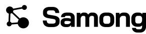

Files
{kind=link}
{kind=link}
{kind=link}
{kind=link}
{kind=link}
{kind=link}

Rules
Clear space
Keep the height of the mark clear on every side. Nothing crops into it — not a card edge, not another logo.
Minimum size
Lockup: 96px wide on screen, 25mm in print. Below that use the mark alone; the letters stop resolving before the circles do.
One lit node
Exactly one element wears the accent, and it is always the same node. Two lit nodes is not the logo. Neither is none.
Do not redraw
No outlines, shadows, gradients, rotation, stretching, or re-spacing the letters. Recolour only by swapping in a -mono file.
Colour
Three values do the whole job. The accent is reserved: in the product it means this is the thing you were looking for, and it should not be spent on decoration here either.
Type
| Face | Used for | Licence |
|---|---|---|
| Bai Jamjuree 600/700 Cadson Demak | Headings, and the outlines the wordmark was made from | OFL-1.1 |
| IBM Plex Sans Thai IBM | Body text, Latin and Thai | OFL-1.1 |
| IBM Plex Mono IBM | Paths, keys, code | OFL-1.1 |
All three are OFL-1.1 and licence copies ship beside them in site/fonts/. The licence governs redistributing the font software, not artwork rendered with it — so a shirt, a mug or an office sign printed from these files is unencumbered. The fonts are not modified, so the Reserved Font Name clause is not engaged. The wordmark being outlined means a print shop needs no font licence at all.